Adventure Works / Carnival Corporation · Aug 2022 – Sep 2023 · US, remote
One boarding experience, every screen size, no simple scaling
Cutting passenger boarding time in half meant admitting a first assumption was wrong — and catching it before launch.
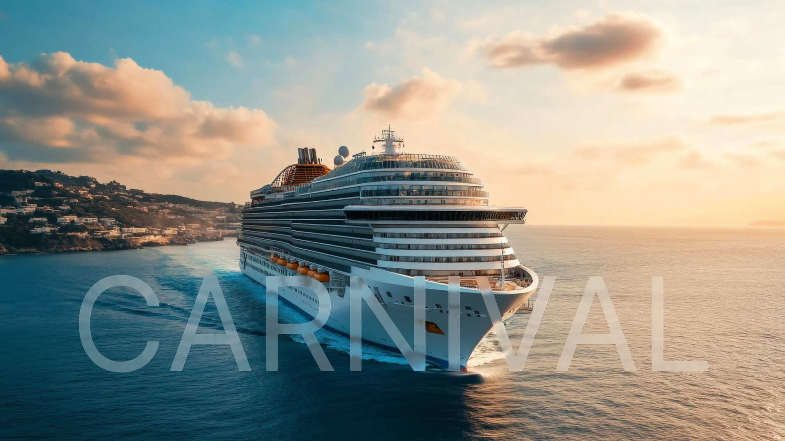
Results
2:40 → 1:20
50% reduction in average passenger boarding time at the crew checkpoint.
7 steps → 4 steps
−43% tap depth in the restaurant-ordering information architecture.
~30% faster order completion
A persistent back affordance in the order flow cut average completion time.Estimated from session timings, not a directly measured outcome.
One design system, three interaction models
Shared components and tokens underneath; crew, passenger, and large-display logic on top of them.
Wayfinding, not static maps
Corridor displays gained deck-aware directions, plus an attract mode that books an event in one tap.
Parallel delivery
Several product teams shipped at once without duplicating components.
"Sergii is very professional and works very well in a team environment. A great addition to any team out there."
Situation
Carnival’s ecosystem spans 65-inch crew displays, staff tablets, and passenger mobile, serving thousands of people through a physical checkpoint under real time pressure. The existing setup was fragmented — interfaces simply scaled from one another rather than purpose-built.
The apps still had to feel like one coherent system — governed by a design system shared across the whole ecosystem — even as each screen size needed fundamentally different interaction logic.
Deciding insight
Early on, the team designed a single, unified navigation system, assuming passengers and crew shared similar mental models. I caught the mismatch in internal testing and pushed to split the models: crew needed task-oriented flows, passengers needed discovery-oriented navigation.
Catching this before launch meant real rework, but it’s what reset the whole approach: every device tier got its own interaction logic, sharing one visual language.
Research
Internal testing ran against the checkpoint as it actually operates — crew working a queue under time pressure, passengers arriving with no context and no training. The two groups failed the shared navigation in opposite directions, which is what made the split the only defensible answer rather than a preference.
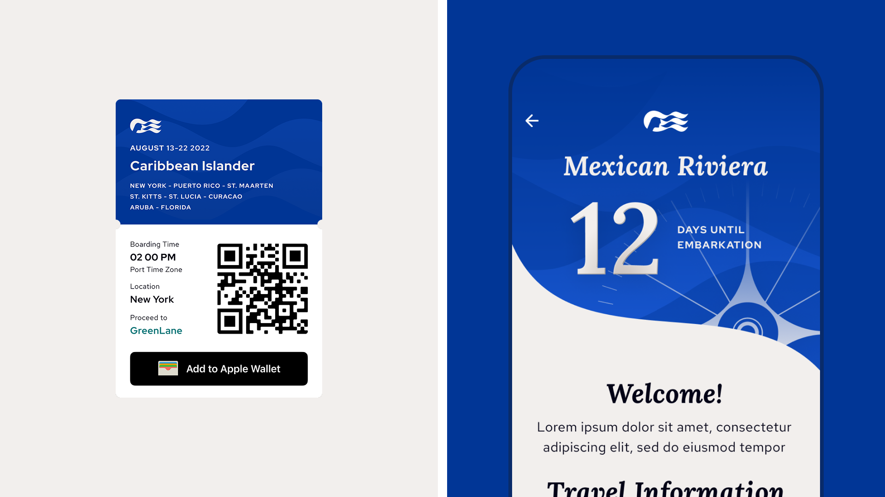
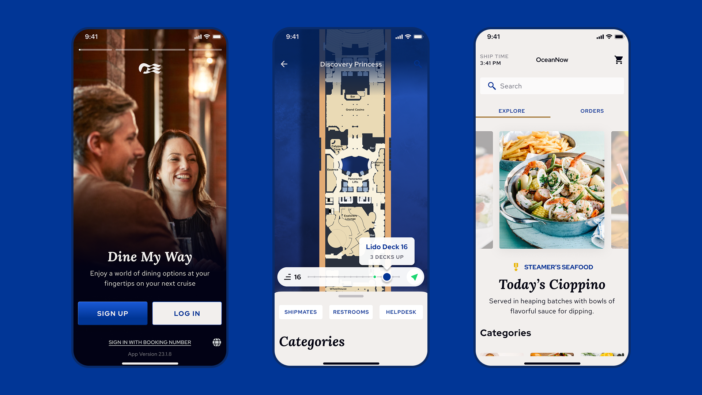
Approach
Large tap targets and at-a-glance readability on 65″ displays. Balanced overview-plus-detail on tablets for crew workflows. Thumb-friendly progressive disclosure on mobile for passengers.
One governed design system underneath all three — shared components and tokens, three distinct interaction models on top of them.
The range this unlocked
The same systems-first thinking carried into adjacent flows: restructuring the restaurant-ordering IA cut navigation depth from 7 steps to 4, and a persistent back affordance in the order flow cut average completion time by an estimated ~30%.
Corridor displays evolved from static maps into full wayfinding with deck-aware directions — plus an “Attract Mode” that takes a passenger from seeing an event on screen to booking it in one tap.
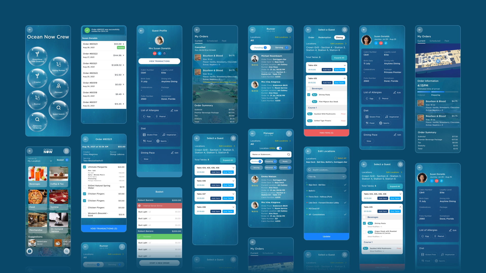
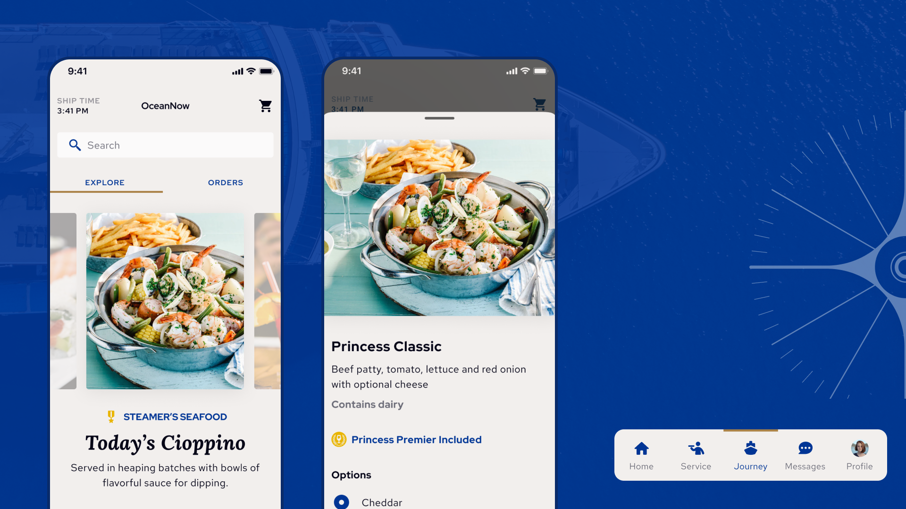
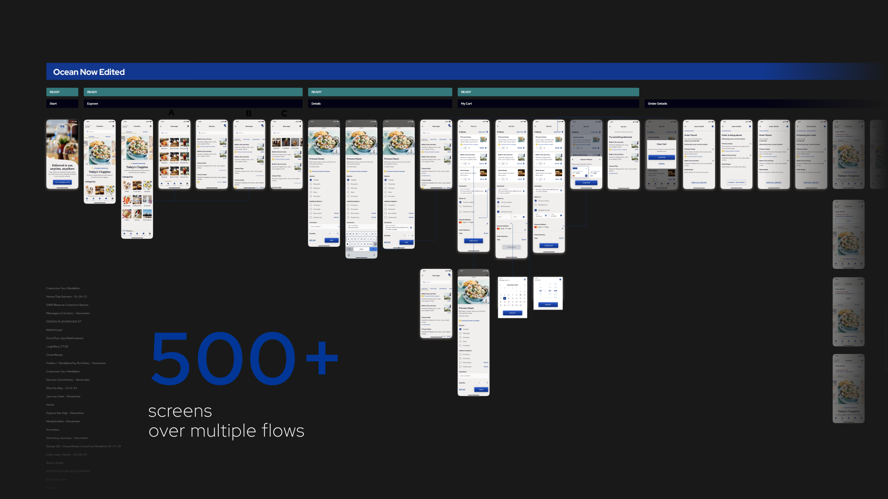
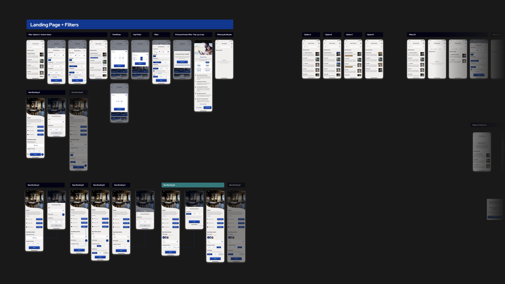
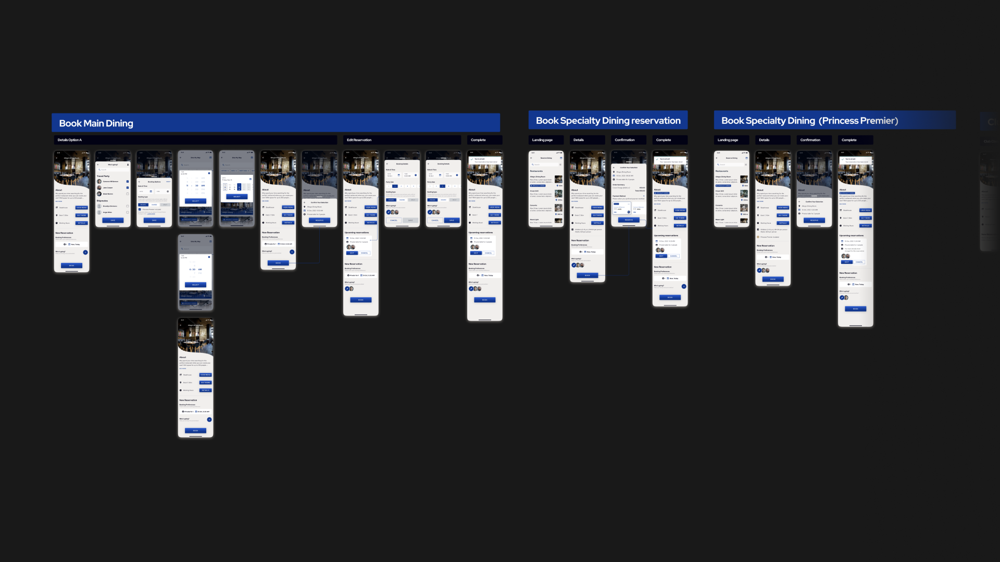
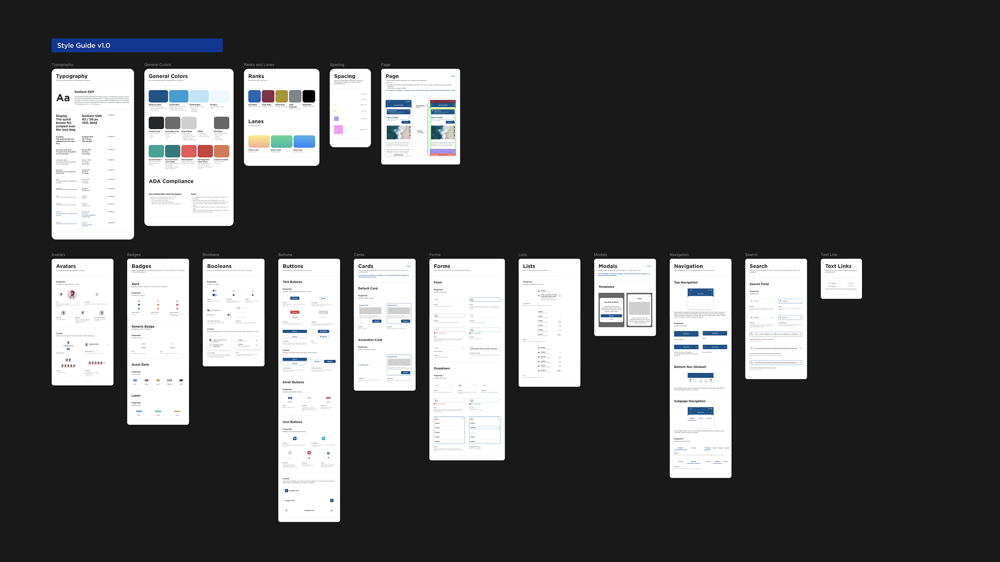
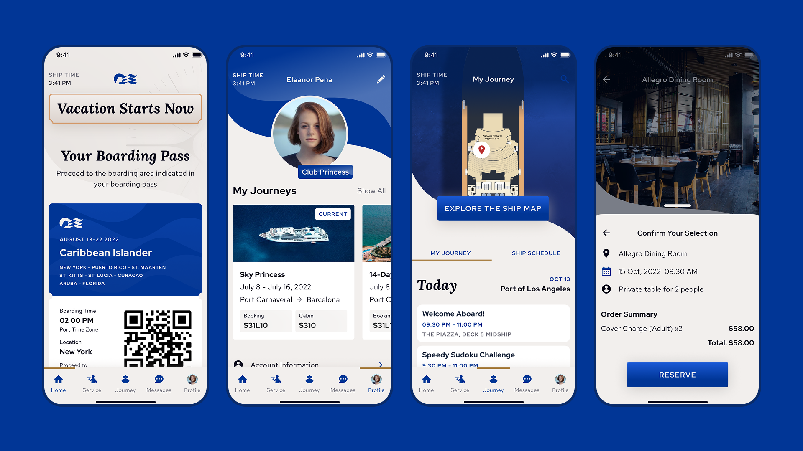
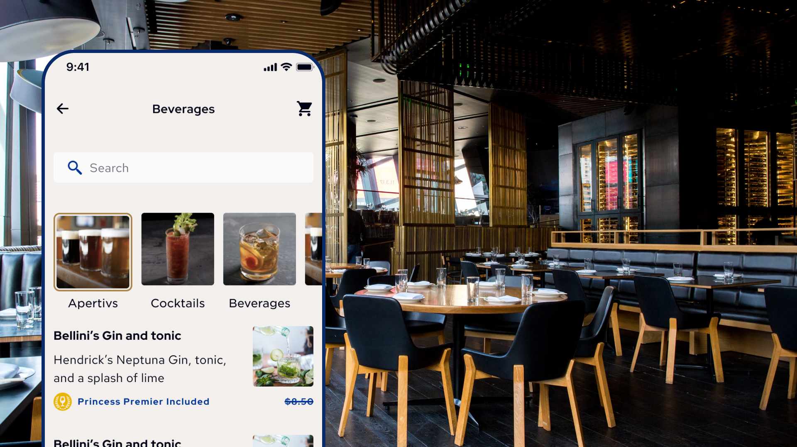
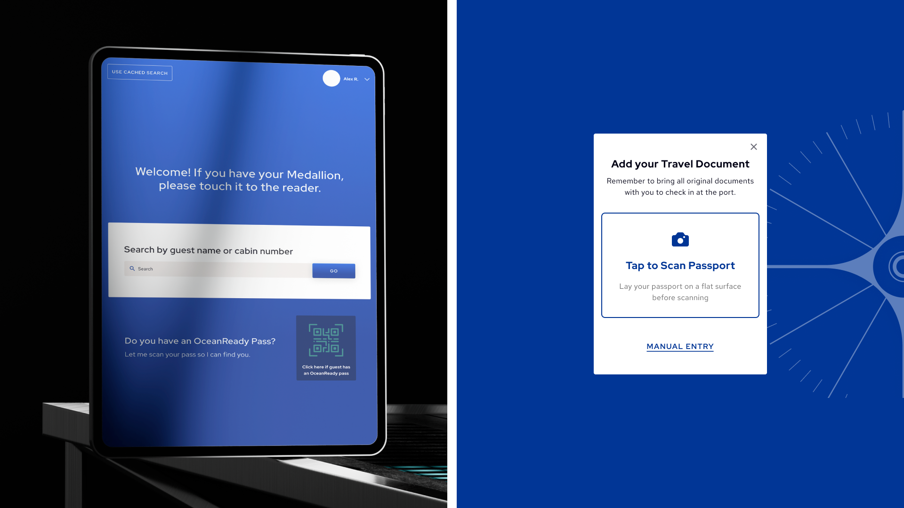
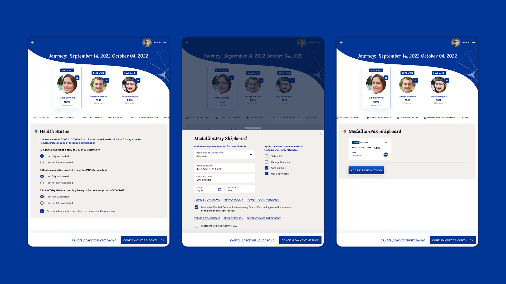
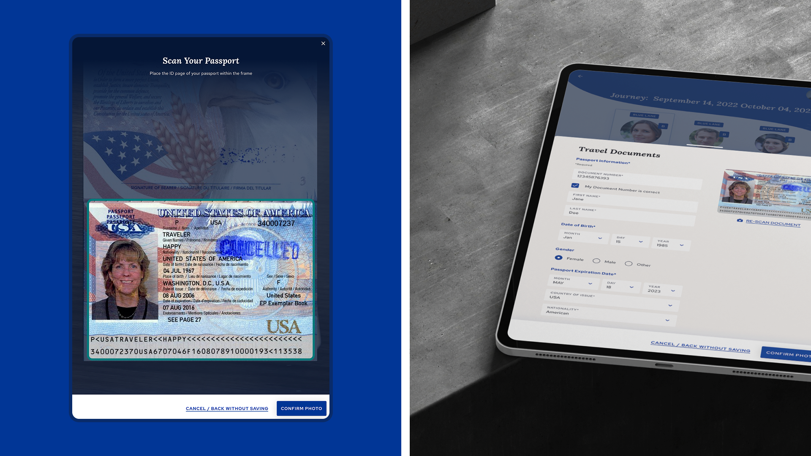
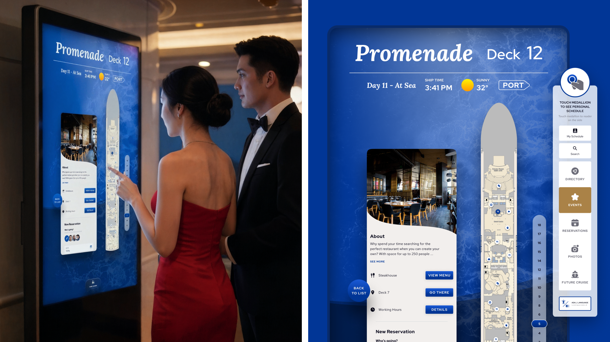
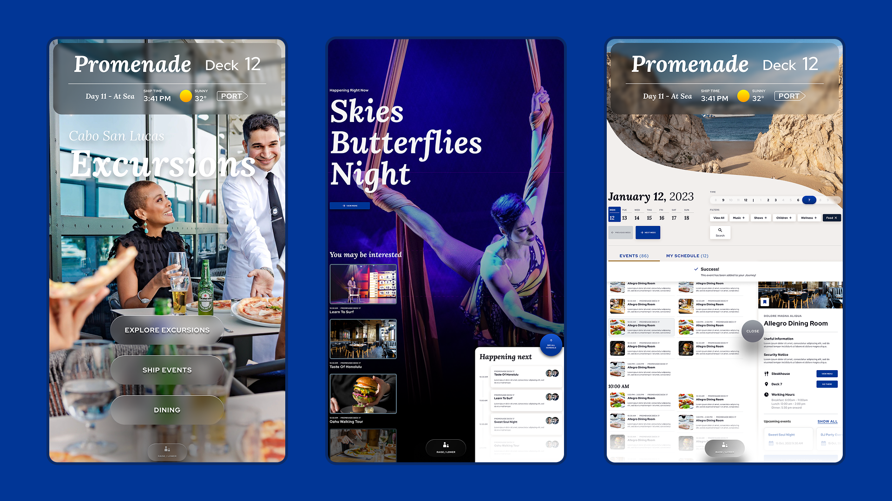
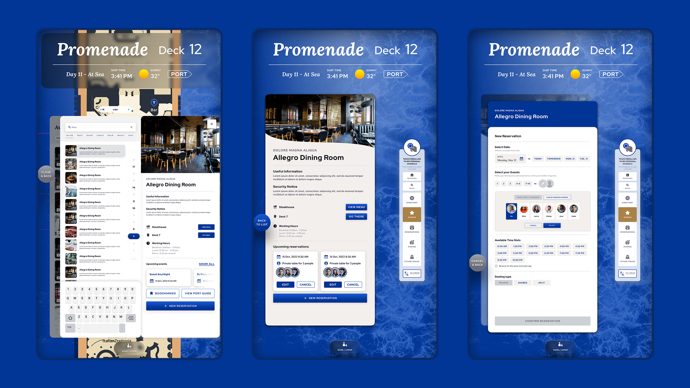